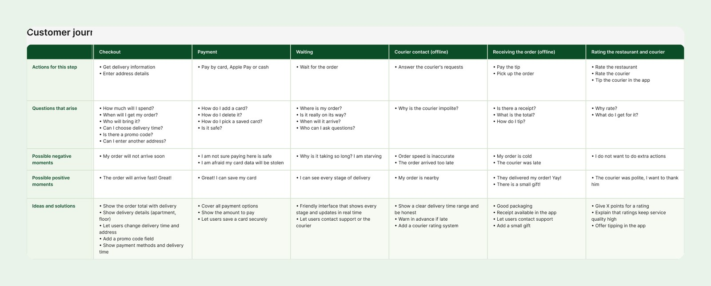
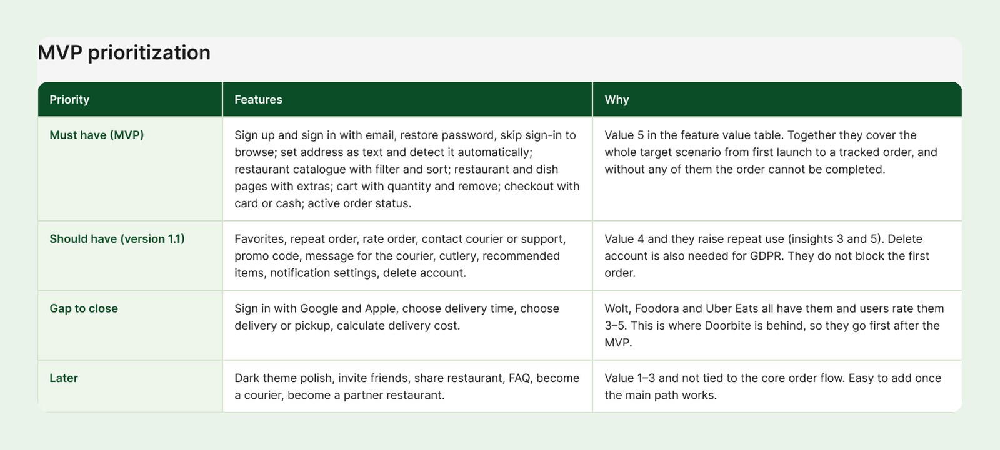
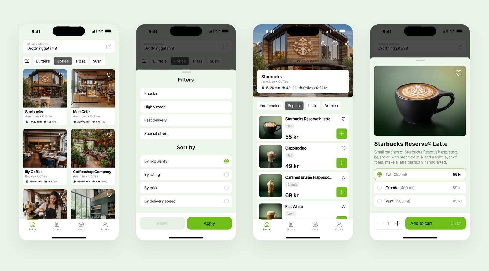
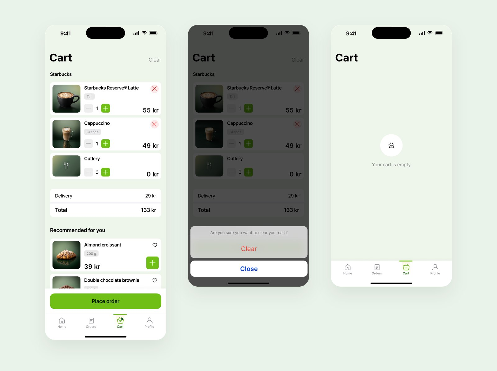
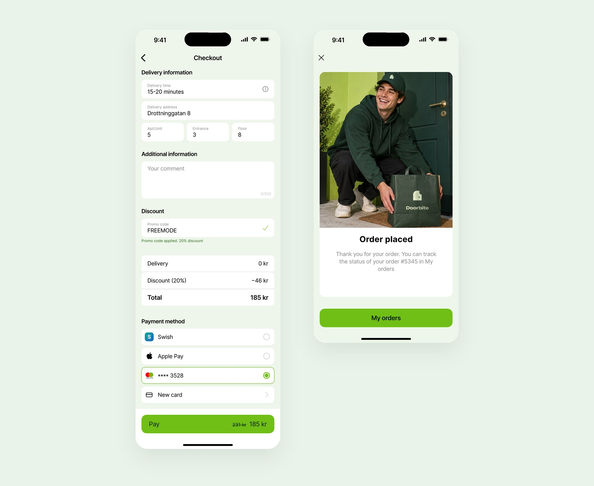
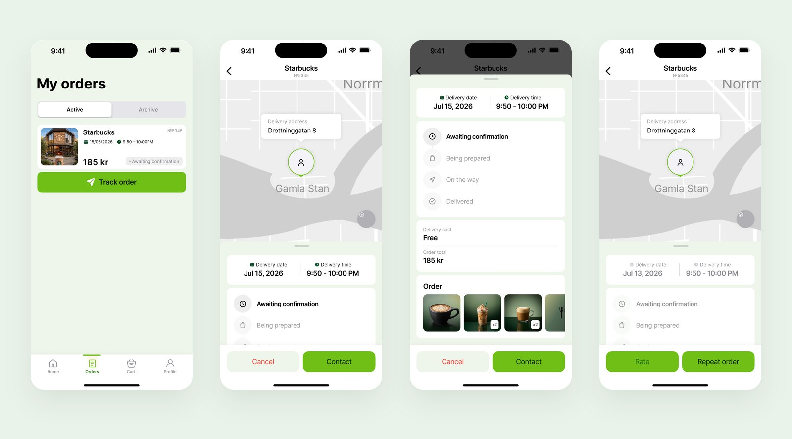
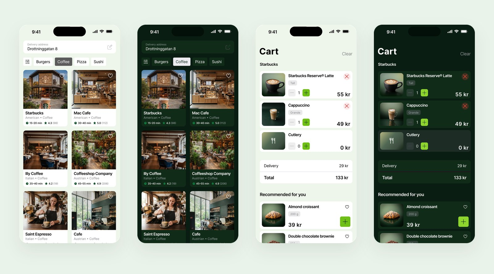

Ordering coffee at your desk without surprises at checkout
Doorbite is a coffee and food delivery app for people in Stockholm who work or study at a desk. I ran it like a client project — from a brief with success metrics to research, an MVP scope, a design system and usability tests. Research pointed to one main problem: the total price and delivery time become clear too late. So the cart and checkout became the core of the design.
Before moving to Sweden, I designed a food delivery app for a client in Ukraine — as the only designer, working with the developers and running user surveys. That work is under NDA, so Doorbite is a concept built on the same experience, rethought for Stockholm.

Summary
Objectives
- Go from craving to a placed order in a few taps.
- Make the total price and delivery time clear before paying.
- Keep the order status clear until the courier arrives.
Role
Solo UI/UX designer, end to end
Brief, research, MVP scope, information architecture, UI, design system, usability tests
Period & type
About 4 months
Concept for the Swedish market, run like a client project. iOS first.
Key skills
Starting from a brief
I set the project up the way a delivery start-up would brief a designer: launch an MVP for coffee and light food delivery to people at work, competing with the big apps on speed and clarity rather than catalogue size. Office employees in Stockholm first; one designer, about 4 months, iOS first, GDPR.
Success metrics, set at the start: checkout conversion (the main one), time to first order, repeat orders within 30 days and “Where is my order?” support contacts.
Starting hypothesis from reviewing Wolt, Foodora and Uber Eats: the total and delivery time come too late, the cart is easy to get wrong, and the address and sign-up stand before any food is shown.
Checking the hypotheses with real people
I compared more than 60 features in 12 groups — sign-in, location, catalogue, restaurant, dish, cart, checkout, orders, profile and more — against Wolt, Foodora and Uber Eats, and scored each by user value. The key gap: the total price and delivery time are hard to read before paying. The matrix also showed where Doorbite would be behind, such as Google and Apple sign-in, which fed the roadmap.
Then I ran a 13-question survey with 15 people who order coffee or food during the workday, and two 18-minute interviews — with an office employee and an IT specialist — about their last real order at work.
Swish was the most common way to pay (7 of 15, then Apple Pay 4, saved card 3), and 8 of 15 reorder the same thing often or almost always.
“Coffee and a pastry seemed cheap until delivery was added.”
“I’d rather see an honest time range than a promise of 20 minutes that keeps moving.”
“Show the honest full total earlier.”
Limits. With 15 answers, these numbers show direction, not proportions for all of Stockholm. I used them to choose what to design and test, not as proof.
What really matters
I mapped a 13-step customer journey from first launch to rating the order. The biggest friction cluster was the waiting stage: no clear order status, no easy way to contact anyone — “Where's my order?”. Together with the research, the journey map gave five insights, each turned into a design decision:

Design decision: Explain why the address is needed, detect it automatically and keep it to one step.
Design decision: Visible actions to change and remove items, and a confirmation before clearing the cart.
Design decision: The total with delivery before payment, a delivery time range and a live order status.
Design decision: A short email sign-up, a note that data is protected, and a Skip option.
Design decision: Favourites, repeat order, saved cards and addresses.
Options and trade-offs
I scored every feature from 1 to 5 by user value and split them into Must have (MVP), Should have, Gap to close and Later. The must-have group covers the whole path from first launch to a tracked order. Four decisions shaped it:

Address: first or later?
Later would show food sooner, but delivery time, fees and which cafés deliver depend on the address. I kept it early but made it one step, detected automatically, with a short reason.
Sign-up or guest?
Guest checkout is fastest, but the app needs a way to show the order status. A short email sign-up with Skip to browse first; Google and Apple sign-in moved to the first update.
As soon as possible or a time slot?
At work, people want coffee now. The MVP shows a delivery time range (15–20 minutes); choosing a time is on the “Gap to close” list.
Which payment first?
Swish is the usual way to pay by phone in Sweden, so it comes first, then Apple Pay and saved cards. Cash on delivery was left out.
Left out of the MVP: pickup, scheduled orders and a delivery cost calculator (planned next), and invite friends, become a courier or partner café — not part of the core order flow.
From first launch to the cart
Onboarding can be skipped, the address is one step, and the catalogue shows delivery time and rating on every card. Filters sort by popularity, rating, price or delivery speed; the restaurant page shows delivery time and cost up front, and the product sheet makes the size and its price explicit.

A cart that's hard to get wrong
Every item has a clear red delete button and a quantity stepper. Delivery and the total are shown right in the cart, before checkout. Clearing the whole cart asks for confirmation, and a small add-on like a croissant is suggested below the order — it raises the average order value for the business.

No surprises at checkout
The delivery time is shown as an estimated range next to the address and door details. Before paying, an order summary lists delivery, discount and total — and the amount on the Pay button always matches it. Swish comes first among payment methods.

Answering “Where's my order?”
The active order has a Track order button. The order status follows each step, from “Awaiting confirmation” to “Delivered”, with the delivery time, cost and items on one screen — plus cancel and contact actions. A delivered order can be repeated in one tap, for people who order the same thing every day.

One system, two themes
I built a design system in Figma that holds 40+ screens in light and dark themes: 74 variables in three collections (primitives, semantic colours with Light and Dark modes, spacing and radius), 16 text styles on Inter and 11 own components with 26 variants — from buttons and inputs to the product card, quantity stepper and the action bar with the total. Screens use semantic tokens, so switching the theme is one mode change.
Six usage rules came straight from the research: the total is always on the Pay button, delete looks like delete, the delivery time is an estimate (not a field), one green action per screen, tokens instead of hex, and Swish first.

Testing with real users
First, an expert walkthrough of six target tasks found three likely failures, and I fixed them before testing: the pale delete icon became a larger red button, checkout got an order summary before Pay, and the active order got a Track order button.
Then the two interviewees tested the prototype, thinking aloud, with four tasks: order a Grande cappuccino, remove a latte from the cart, check out with Swish while saying the total and delivery time, and find the order status.
One participant first named the item price without delivery: “Oh, delivery is already included? I was looking at the other amount.”
Next iteration: Give “Total incl. delivery” more weight than item prices.
The time range was read as a field to pick a time: “Is this a time I can choose, or when it will roughly arrive?”
Next iteration: Label the range “Estimated delivery”.
Limits. Two participants find problems, they don't measure them. The next round is planned with five participants and a reorder task.
What I learned
Start from metrics
Every decision came back to one question: does this help people finish an order faster and with fewer surprises?
A number needs meaning
Tests showed something desk research missed: people need to understand what the delivery time means, not just see it.
Cut scope on purpose
A priority matrix kept a solo project realistic, and one design system carried 40+ screens in two themes.